Website to Windows Store app
Designing websites has been a common practice for decades. With Windows 8, designers and developers can use the web technologies they are familiar with, including HTML5, Cascading Style Sheets, Level 3 (CSS3), and JavaScript, to build Windows Store apps. Here we explore how to expose the capabilities of a website to make it a great Windows Store app and show ways to provide additional value, personalization, and richer experiences using features of the Windows 8 platform.
Our aim is to help designers and developers reimagine their websites as Windows Store apps.
The food truck website and app
The basis for this article is a food truck website that lets users browse food trucks in their area, stay up to date with the latest news, and provide user reviews of food trucks. In the design oriented case study that follows, we explore ways to reimagine the core functionality of the site and extend it as a Windows Store app.
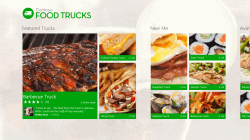
Our goal in migrating to a Windows Store app was to highlight the best features of the website while maintaining parity with core functionality of the site. We determined that the Windows Store app is best at letting users browse and find nearby trucks. The next figure shows the anatomy of the food truck website UI. Here we show how to translate each of these UI components to Microsoft design style.
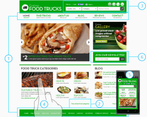
- Layout and navigation
- Commands and actions
- Contracts: search, share, and settings
- Touch
- Scaling and views
- Notifications
Layout and navigation
Focus on content, not chrome
Most websites use well established layout patterns. The homepage design has UI to support navigation (both header and footer), utility components (sign-in, search), and access to other content (blog and news). These are common elements for websites, but they distract users from focusing on the most important task: finding a food truck that's nearby. In designing the Windows Store app, we removed much of this UI and content because it wasn't directly related to the main feature of the app.
| 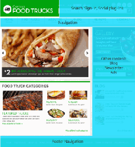 | 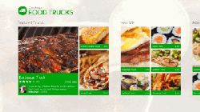 |
Website:
* The website has a common two-column layout pattern: main content on left and other content on right.
* The focal point of the site, food trucks, occupies only about a third of the screen. | Windows Store app:
All space on the landing page is dedicated to what this app is great at: finding a nearby food truck. |
Example: highlighting content on the website home page and Windows Store app home screen.
Both the website and the Windows Store app show featured food trucks and categories on their main pages. Because of the limited space on the website, each food truck category is represented by a single picture. When designing the Windows Store app home screen, we chose to bring more food truck info to the top level to provide users more context and create a more engaging interface.
| 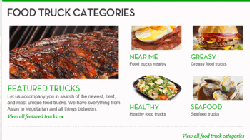 | 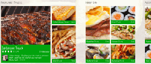 |
Website:
Each food truck category is represented by a single picture. A user must go to another page to see more trucks in that category and then select a truck to see details. | Windows Store app:
Each category is represented by a group of pictures, so users can quickly determine what trucks in a given category are nearby. Users can go directly to a truck from the home screen. |
Follow Windows Store app silhouette and align with the grid
The most recognizable characteristic of a typical Windows Store app silhouette is the region of the screen dedicated to content, with heavy margins on the top, bottom, and right edges. The left margins and the items peeking in from the right serve as a visual indication that the content pans from right to left. The top and bottom margins provide a visual rail to anchor the content. Components on the page are aligned to the grid to convey hierarchy.
Example: food truck app designed on the Windows Store app silhouette and grid.
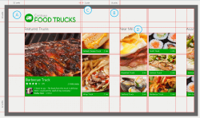
Red guidelines show how each element on the page is aligned to the grid (note that a unit is 20px).
A. Top and left margins are consistent throughout the app.
B. We use a consistent margin to separate different food truck categories like "Featured Trucks", "Near me", and "Asian".
C. We use a consistent margin to separate pictures within a truck category. This margin is smaller than the food truck category margin to convey page layout hierarchy.
D. The group title of each food truck category is also aligned to the grid.
Use direct manipulation to navigate
On the website, navigation elements are repeated on both the top navigation bar and in the footer. The navigation elements are permanent and always in view. We designed the navigation elements in the Windows Store app to be both integrated directly with the content and tucked away until a user needs them.
Example: Navigating to a particular truck on the website and the Windows Store app.
| 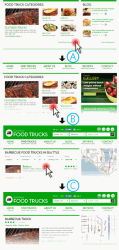 | 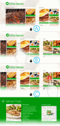 |
Website:
A. A user navigates to a separate category page on the website to see all truck categories.
B. The user then picks a category (e.g. "Barbecue food trucks") and enters the category.
C. The user finally can choose a truck from the selected category. | Windows Store app:
A. The home screen includes a hub page that consists of groups of content: featured trucks, trucks near me, and category view.
B. Users can use touch to pan in either direction to see different categories of food trucks right on the home screen.
C. Because each hub highlights several trucks in the category, users can tap on a truck to go directly to that truck's page, or they can tap on the category group header text (e.g. "Asian") to go to a category page. |
Commands and actions
Keep app commands and actions in the app bar
Websites frequently use ad-hoc commands that appear as user actions in line with content. For example, on our website, every food truck page has a link for users to upload photos of a given truck. These in-context actions are repeated on each individual truck page.
Following the "content before chrome" approach of Windows Store app design, we put all the contextual actions in the app bar, a common control in the system. In addition, frequently used commands are near the edges so that they are more comfortable to reach. By employing these design principles, the app design surface doesn't get cluttered with controls, and no matter where a user is, they can swipe up the app bar from the bottom or top of the screen to see relevant actions. All Windows Store apps can use the app bar for their commands. Because users will become familiar with app bar interactions, it also increases the usability of the app and makes the whole system feel more cohesive.
Example: uploading a food truck photo on the website and the Windows Store app.
| 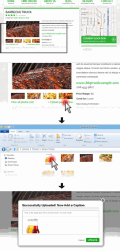 | 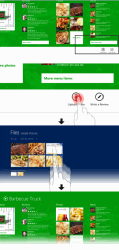 |
Website:
Ad-hoc commands. User actions are in line with content. | Windows Store app:
App bar is hidden by default to provide an immersive experience for users.
A user can swipe up from the bottom or top of the screen to access contextual actions. The actions change depending on where the user is in the app or what content is selected. |
Contracts
The food truck website follows common website conventions for global actions like search and sign-in. These actions are affixed permanently to the top right corner of the site. When designing the Windows Store app, we didn’t include our own UI for these global actions. Instead, we used built-in capabilities of the system, including the Search, Share, and Settings contracts. Because these UI components are not always on screen, the app canvas is cleaner, providing more space for content.
Use Search contract to centralize the search experience
Like most websites, the food truck site has a search box on every page and the search is scoped to the site only. This means a user has to go to the food truck website first before searching.
When designing the search experience in the Windows Store app, we employed the Search contract. As a result, there is no permanent chrome on screen for search. The Search charm provides access to search functionality and a user can invoke it anywhere in the app or from anywhere in the system.
Example: searching for a food truck using the website and the Windows Store app.
| 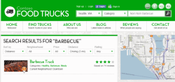 | 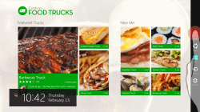 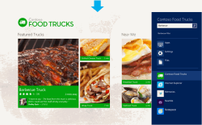 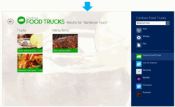 |
Website:
* Search box is always visible on the site.
* When search results are displayed, all website chrome is still present.
* Users always need to go to the website first before performing a search for a food truck. | Windows Store app:
* Users can perform a search anywhere in the app by swiping the edge to bring up the charms and choosing search.
* The food truck app is selected by default because the user is currently inside the app. When the user starts typing, the app supplies search suggestions in the search pane. This way users can quickly see which terms generate results. After the user submits their query (e.g. "barbecue truck"), the app shows a search results view.
* The search results view is clean and dedicated only to search results, without unnecessary chrome. |
Example: searching for a food truck outside of the app ( available only in the Windows Store app).
In addition to in-app searching, users can perform a search from outside of the app by selecting the food trucks app as a search target. In the example here, a user is searching for "barbecue truck" from the Start screen. The user taps the food trucks app in the app list within the search pane, which launches the app and completes the search query. Because the food truck is optimized for finding nearby food trucks, with one tap a user can complete a search and find barbecue trucks in their area.
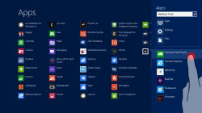
Use the Share contract to reach more destinations and people you care about
On the food truck website, users can share info about a particular food truck via email, Facebook, or Twitter. Sharing options are frequently made available in many places on a website, near the content that can be shared.
Sharing scenarios really light up with in our Windows Store app thanks to the Share contract. Using the system's built-in share charm eliminates the need for share buttons to appear throughout the app. Users can always find share options in a consistent location, regardless of which app they're using. The change simplifies both design and development because there's no need to connect with every service that a user might want to use. After integrating our app with Share, it is connected with every Windows app that has implemented the share contract. There's no need to deal with API changes to external web services.
Example: sharing a food truck photo.
| 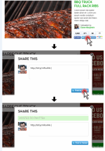 | 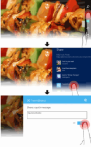 |
Website:
* Each sharing service has its own button.
* Sharing buttons are spread throughout the website. | Windows Store app:
* A consistent location in all Windows Store apps for all sharing options. Users can invoke Share anywhere inside the app.
* When a user chooses a sharing service, the target app can customize the UI pane and branding. |
Example: a close look at the Share pane.
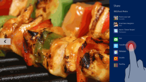
Windows Store app:
- Any app that’s implemented as a share target appears in the app list in the Share pane. For example, Socialite, Tweet@Rama, or Mail.
- Users can share a variety of content types that an app supports. For example, users can share links, photos, or save the info to a note-taking app if they like.
- Frequent share targets are displayed on the top to help users complete the sharing work flow quickly.
Use the Settings pane
The food truck website has a set of utility functions, like About us, Sign-in, Contact info, and Newsletters. These functions inhabit specific areas of the screen according to common web design patterns, so users can find them easily. But they are spread across different areas of the site. Configuration and management tasks are not the focal points of the Windows Store app. By using the Settings contract with its consistent entry point, users do not have to memorize where these app management functions are and can reliably invoke them when needed.
Example: setting options on the website and the Windows Store app.
| 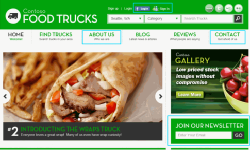 | 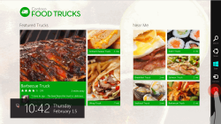  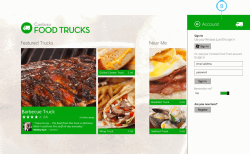 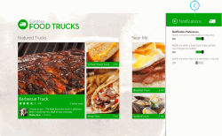 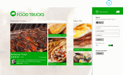 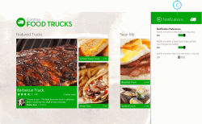 |
Website:
* Utility functions like sign-in, About Us, Contact, and Newsletter reside in different areas of the site. | Windows Store app:
A. Setting options are all in one place in the Settings pane.
B. Users can sign in anywhere within the app without leaving their current context.
C. The notification setting allows users to specify what types of notifications they want to receive. This replaces the site newsletter and provides users with just-in-time info from the app. |
Use file picker to access files from various locations
The foot truck site encourages users to upload photos of trucks in their area. This functionality can be easily replicated in a Windows Store app using a file picker. The file picker is a full screen dialog, which lets users access files and folders located on the local PC, connected storage devices, or other computers connected via a HomeGroup. Users can also access items from apps that participate in the File Picker contract.
Example: uploading a food truck photo from the local file system.
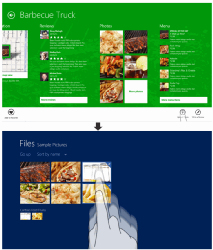
Windows Store app:
- User taps the Upload button in the app bar and the file picker UI opens. This is a consistent UI surface that the user sees whenever they want to access files.
- Tapping on the Files header, the user sees a flyout of all available file locations and navigates to a file folder.
- User selects multiple photos from the folder and a list of thumbnails at the bottom left showing the selected photos appears.
Touch
Use horizontal panning for horizontal layout
Both the food truck website and Windows Store app are designed with the user's interaction method and ergonomics in mind. The website is designed primarily for mouse interaction, so content on every page is laid out vertically and users can use their mouse to quickly and easily scroll to the content they want. The Windows Store app is designed to be touch first and uses landscape orientation, like most desktop and laptop PCs. Horizontal layout optimizes screen space usage. It's also more comfortable and natural for users to pan horizontally with touch on a landscape device than it is to scroll vertically.
Example: navigating content on the website versus the Windows Store app home screen.
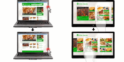
Cross-slide to select objects
A common convention on websites is to use check boxes beside multiple objects to indicate the multiple selections. With Windows 8, a user can do a quick swipe on an object, perpendicular to the panning direction, to select an object in a list or grid. When objects are selected, the app bar can be revealed automatically to show commands relevant to the item.
Example: selecting multiple food trucks on the home screen to pin to the Start screen.
On the app landing page, when users swipe to pick a truck, an app bar is revealed with an Add to favorites command that can bookmark the selected truck(s). This gesture is reversible, which makes selection a lot more efficient in Windows Store apps, giving users the confidence to explore the app.
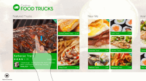
Pinch and stretch to semantic zoom
The pinch and stretch gestures let users quickly step through a long list of content. The landing page of the Windows Store app shows a number groups, including Featured, Near me, Asian, Barbeque, and Breakfast. Users can pan across to view more content, or, using semantic zoom, they can quickly jump to a specific section. Using the semantic zoom control, pinching zooms out to show all of the sections in the current view at a glance. Users can then quickly tap to jump over to the beginning, the end, or a specific section within the list. The zoomed out view can be further designed to show interesting content within each section, or meta info about a section (such as the number of trucks in each category). It can be used for navigation instead of persistent navigation elements on the app canvas.
Example: jumping to a particular truck category using semantic zoom.
| 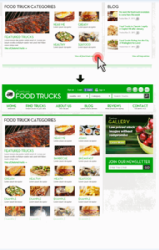 | 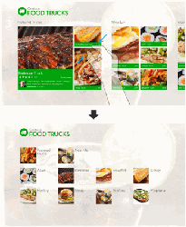 |
Website:
* User must navigate to a separate page to see all categories. | Windows Store app:
* User can use semantic zoom on the home screen to see all categories easily, without leaving the screen.
* In semantic zoom view, each category is represented by a single picture. All categories are available via the home screen without the need to pan to see a complete list. |
Scaling and views
Design adaptive layout for orientation and screen sizes
We designed the food truck website layout to be flexible enough to scale to different devices, screen sizes, resolutions, and orientation. Similar to a fluid website design, a Windows 8 PCs range from small, touch-only tablets to larger laptops and desktops. Designing our app so it looks great on the wide range of devices that support Windows Store apps is crucial if we want our app to reach more customers.
You can apply many principles of website design to Windows Store app development. Built-in templates and controls make changing from landscape view to portrait view and back easy. When orientation changes to portrait, more trucks are shown in each category. Similarly, the app also shows more trucks in each category to take advantage of the additional screen space of high resolution monitors.
Example: food truck website and the Windows Store app on different devices.
The food truck website on different devices and screen resolutions.
| 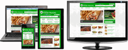 | 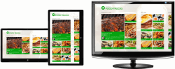 |
Website:
* The food truck website adjusts layout and reflows for different screen sizes and form factors. | Windows Store app:
* The Windows Store app in portrait mode, landscape mode, and on a high resolution screen. We use the extra space to show more content. |
Use snap view to engage your users
Windows 8 lets users multitask by snapping an app next to another app. Snapped view is a great way to increase the app's time on screen and engage users for longer periods. It's easy for a user to switch the main app and the snapped app by manipulating the splitter between the two, so it is important to maintain context across resizes. Users should not lose app state as a result of resizing their app.
Example: Windows Store app home screen in both filled and snap views.
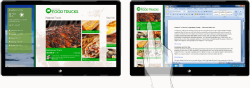
- Left: The food truck app in filled view. The user can use a weather app and the food truck app side-by-side.
- Right: In snapped view, a user pans vertically to get to more content because it’s more comfortable to pan along the long edge. This is different than the horizontal panning in full view, which is also optimized to pan along the long edge.
Notifications
Use tiles for persistent and dynamic updates
Users of the food truck website can go to the site to check out news and blogs about new food trucks in their area or food trucks that have changed locations. The website also allows users to follow food truck announcements on Facebook and Twitter. But to do this, users either must go to the website to see what's new or sign up for updates. Users might not see some updates until they've already lost relevancy.
When translating this capability into a Windows Store app, we used tiles and toast notifications to provide users with more up to date info that's tailored to their needs. Tiles shown on the Start screen are front doors to the Windows Store app. They're designed to feel alive with activity and deliver fresh, personalized content that is tailored to the user so they're more likely to use the app and derive value from it. The app continues to show this content even when it's not running.
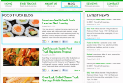
Website:
- Latest news section on the website shows a truck's latest location.
- The blog on the website lists new trucks and provides hints about when food trucks will be in a given neighborhood.
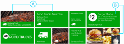
Windows Store app:
- The main tile of the food truck app shows what food trucks are near a user and how long the truck is going to stay at that location. Tiles can be updated even when the food truck app is not running so users can receive updates via the Start screen.
- A user can pin their favorite trucks (e.g. Cheeseburger Truck) as a tile on the Start screen to receive the latest news about that truck. This gives users a high-degree of customization, tailored to their needs. Many tile templates are available for app designers to choose from to make implementation easy.
Use toasts for transient and important notifications
In addition to Tile notifications, Toast notifications can also be used to notify users of real time events. Unlike tile updates that are passive, toast notifications in Windows Store apps are important updates that will interrupt users. They show up on the top right of the screen and can appear anywhere in the system. Generally it's best to let users opt-in to notifications during their first run of the app. If applicable, show recent toast notifications on tiles while they are still relevant.
Example: a user’s favorite food truck has changed locations.
User has opted to receive toast notification via the Settings pane to let them know when a favorite food truck has changed its location.
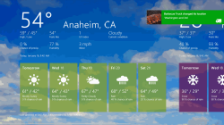
Conclusion
When building a Windows Store app based on an existing website, always ask yourself what your app is best at. When you have an answer, optimize your Windows Store app for that scenario. Always remember to emphasize content over chrome: use built-in commands in the system like Share, Search, Settings to provide access to common functionality through a familiar and intuitive mechanism. Hide commands off-screen when not needed using the app bar and semantic zoom controls. And take advantage of live tiles and notifications so users continue to derive value from your app, even when its not running. If you do these things, you'll end up with a compelling Windows Store app that your users will love, and that can help you grow your business.
About the authors
Nicholas Huttema is a Visual and Interaction Designer at Plain Concepts. He enjoys working with fresh ideas and clean user interfaces. Nick's education and career began in Michigan as a Print Designer. Since then he added UX Design to his skill set working at various companies in the Los Angeles and Seattle areas. He has done design work for Microsoft, Myspace, Amazon.com, and Herman Miller, among others. Outside of work he enjoys spending time outdoors hiking, camping, and snowboarding.
Qixing Zheng is a User Experience Program Manager at Microsoft. She is part of the team that created the Windows 8 user interface and has been helping designers to learn about Microsoft design style. Her passion is deeply rooted in helping people improve their user experience with the technology they rely on every day. Before joining the Windows team, Qixing worked as the first UX advisor at Microsoft Canada where she spoke at universities, design communities, and companies about Microsoft’s investment in UX. She also worked at identifying design heroes and collecting design stories from the community.
{kind=link}
{kind=link}
{kind=link}
{kind=link}
{kind=link}
{kind=link}
{kind=link}
{kind=link}
{kind=link}
{kind=link}
{kind=link}
{kind=link}
{kind=link}
{kind=link}
{kind=link}
{kind=link}
{kind=link}
{kind=link}
{kind=link}
{kind=link}
{kind=link}
 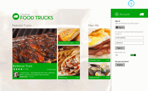 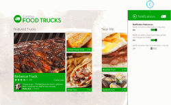
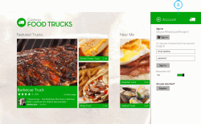 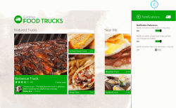{kind=link}
{kind=link}
{kind=link}
{kind=link}
{kind=link}
{kind=link}
{kind=link}
{kind=link}
{kind=link}
{kind=link}
{kind=link}
{kind=link}